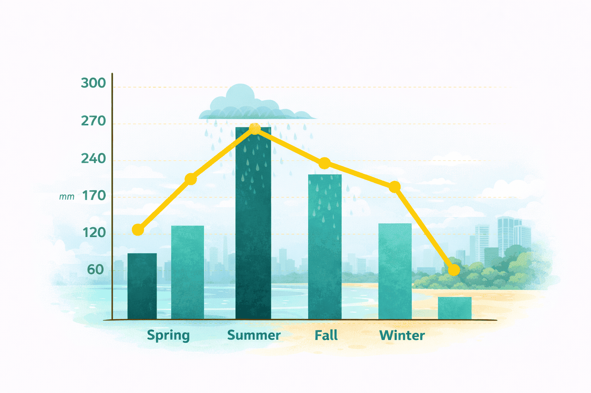

Thailand’s City That Never Sleeps
Pattaya Pulse:Food, Sun and Neon Nights
From bustling promenades to nearby islands, the city offers an energetic and diverse escape. Discover Pattaya City, with vibrant nightlife and rich cultural landmarks.
-
 Reading time: 7 min.
Reading time: 7 min.
-
 Read: 46
Read: 46
-
 Shared: 23
Shared: 23
Just two hours from Bangkok, Pattaya trades quiet elegance for full-on energy: buzzing beach clubs, street food stalls on every corner, and a coastline that barely sleeps. What was once a sleepy fishing village has grown into Thailand's brashest resort city, and it wears that reputation proudly, without a hint of apology.
By day the bay is calm enough for swimming, jet skiing, and boat trips out to the nearby islands; by night the promenade transforms into a maze of neon signs, live music bars, and food carts serving everything from grilled squid to mango sticky rice until well past sunrise.
Rain periods in Pattaya

Outside this window, from November through April, skies stay mostly clear and humidity drops noticeably, which is widely considered the best stretch for beach days, island hopping, and long, warm evenings along the promenade without ever needing to pack an umbrella at all.
Popular beach activities
From jet skiing and parasailing off the main bay to snorkeling day trips out to Koh Larn and banana boat rides with the kids, there's no shortage of ways to fill an afternoon here. Rental gear and tour operators line the entire beachfront, and most trips can be booked same-day without any advance planning at all.
Accommodation expenses
Budget guesthouses a few streets back from Beach Road start around 15 euros a night, while beachfront resorts with pools and sea views typically run 60 to 120 euros a night, still a fraction of what comparable coastal stays cost across most of Europe, and a good mid-range hotel with breakfast often lands right in between.
Follow me for more content like this, and
share the article with your friends!